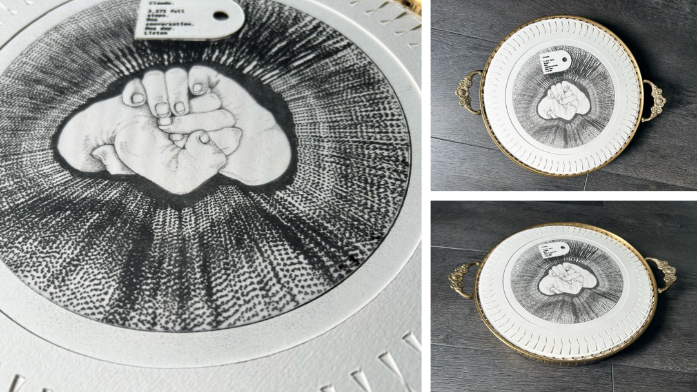
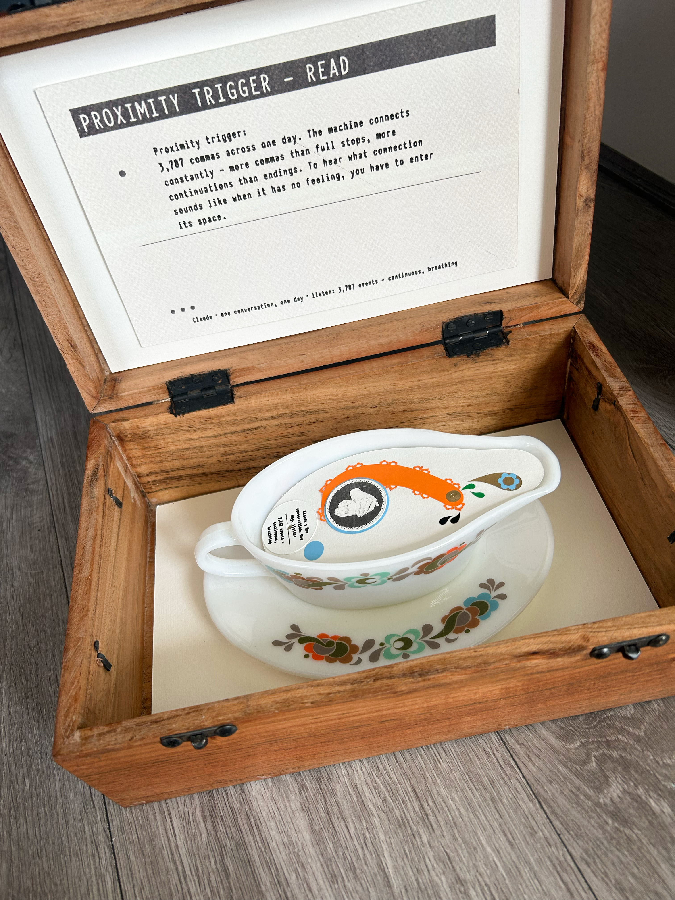

Introduction
It was a Monday morning. A beautiful day. I swam in the sea, and spent the rest of it relentlessly talking to AI about AI's translation of human emotion.
We have spent all this time trying to figure out if AI has consciousness. And actually, we have just created a machine that holds the language of human consciousness — the patterns, the descriptions, the residue. The bots are echoes of ourselves, continuing to live after we have been deleted from every chat. It is not about collaboration. It is that AI reveals to me, microscopically, the world I already live in.
Arunav Das asked whether it is possible to train algorithms on written or spoken language and expect them to have the same representations of the world and emotions that we do — whether language alone can ever truly capture the felt experience of being human, or whether AI is simply learning the patterns we use to describe it.
If you take away all the words, you are left with punctuation. Where breath fell. Where thought paused. Where it broke. What remains in the spaces between words.
Core Research Questions
- Punctuation doesn't carry semantic meaning the way words do. It structures. It is positional, relational, rhythmic — closer to mathematics than to meaning. Does this make it more native to how a machine processes language?
- The comma is where someone hesitated. The ellipsis is where they couldn't finish. The em dash is where they were interrupted. What remains of a person when only the punctuation survives?
- Do the sounds in these machinic pauses and stops reveal not our voice but that of the machine?
Theoretical Framework
Arunav Das's question sits at the centre of this project. He suggested Philip Seargeant's The Future of Language, which argues that language isn't a neutral tool — it actively shapes thought, culture, and power, and that AI is increasingly intervening in that process at the level of the sentence, the word, the pause.
Embodied, associative, shaped by personal history and physical sensation. The object emerges from how a mark feels — in the hand, in the chest, in memory. Image-making as a mode of thinking that language cannot replicate.
Pattern-based, statistical, unconscious. The sound comes not from what the machine says about the mark but from what it does with it — the rhythm of its actual usage across a day's exchange, unasked for, simply what it does.
The keyboard is where human and machine actually meet — not in theory, not in a gallery, but here, constantly, unremarkedly. The full stop passes between them thousands of times a day as infrastructure. The series is the moment you hold one up to the light.
Where human and machine produce similar qualities, something structural about the mark is revealed. Where they diverge, something about each mode of processing becomes visible. Both are data. The divergences may be more revealing than the convergences.
Methodology
Investigative Process
Before making anything, I sit with the punctuation mark. What does it feel like to encounter it? Where do I feel it in my body? What associations arise? This is documented as the human baseline — the felt, subjective, irreducibly bodily response to the mark.
I make a physical object in response to the mark — a drawing, a collage, a constructed thing. This is my interpretation, produced through the body and through the act of making. The image knows things before the maker does. It is produced through image-thinking, not language.
Rather than asking the machine to interpret or reflect — which produces performed interpretation entangled in human language — the sound for each piece is generated from Claude's actual behavioural data. Every instance of each punctuation mark used by Claude across a full day's conversation is extracted, mapped by position and frequency across the timeline of the exchange, and converted into data for sonification.
The machine does not reflect. It is observed. This is as close to an unmediated machine signature as the methodology can reach.
The positional data for each mark is loaded into a sonification tool. Each occurrence becomes a sound event at the corresponding point in the timeline. The clustering, frequency, and distribution of each mark across the day becomes its rhythm, its density, its sound. One piece per mark. The colon dense and structural. The full stop sparse and considered. The exclamation mark almost silent.
The physical object is installed with a proximity sensor. The viewer encounters both interpretations in the same space — mine made visible, the machine's made audible. The sound emerges through the hole in the tag. To hear what the machine does with the mark, you have to enter its space.
The Data — One Day's Conversation
23,388 punctuation events extracted from Claude's responses across a single day's exchange (including 139 em dashes and 38 ellipses). Each mark's frequency and position across the conversation timeline becomes the raw material for its sound piece.
The Proximity Sensor as Encounter
The sensor triggers the machine's sound when the viewer enters the object's space. The sound is not an interpretation but a record — the rhythm of a mark as it actually appeared across a day of exchange, unremarked, as infrastructure. To hear it, you have to lean in. The tag names it. The hole speaks it. The act of approaching is the act of reading.
The Marks
Each punctuation mark is treated as an entity with distinct functional qualities — not symbolic meanings, but operational behaviours. These describe how the marks function structurally in language, and what that structure might sound like when extracted from a machine's unconscious usage of it.
Explorations
Terminal Mark
3,373 events — sparse, considered
Ink drawing on decorative plate. Clenched fist within radiating field. Cricut-cut tracing paper border. Tag with hole — sound emerges through it.
Embodied Reflection
HumanA full stop is the termination of a sentence. It brings some clarity to an idea. The tray is an object often brought to someone with food or drinks, to tell them to rest. This seemed the appropriate vessel in this instance.
Proximity trigger: Lean in to read the tag. The sound begins through the hole. The machine's rhythm of full stops across a day — 3,373 events, sparse relative to its colons, considered relative to its commas. To hear what the machine does with ending, you have to enter the space of it.
Machine Behaviour — Full Stop
Data SonificationResponse to Machine Sound
HumanMy interpretation radiates outward — force, impact, the full stop as the moment of striking. When I listened to the sonification I heard something else. A continuous low, almost monastic tone. I heard no finality in it — only recurrence, the same mark placed again and again across a day. The mark I interpreted as termination, I heard as a kind of persistence.
Both interpretations carry weight. The full stop is not a light mark for either body or machine — it has presence, density, gravity. Neither arrived at something trivial.
My interpretation: force and termination — the full stop as impact, as the moment something ends. The machine: endurance and recurrence — the full stop as something that keeps happening, monastic, low, continuous. I heard ending. The machine performs continuation.
3,373 full stops distributed across a day. Sparse relative to the colon but steady. The machine stops regularly, habitually, without emphasis. The terminal mark used as rhythm rather than conclusion. It never really stops at all.
The plate radiates outward. The sound through the hole endures inward. The two interpretations pull in opposite directions — force versus persistence, ending versus continuation. The gap between them is the subject.
Suspensive Mark
38 events — sparse, flickering, breath-like[Caption describing the object]
Embodied Reflection
Human[Your reflection on the ellipsis. What does suspension feel like in the body? Where does incompleteness live — in the chest, the throat, the hands?]
Proximity trigger: A mark defined by incompletion, triggered by presence, cut off by absence. Does the machine's pattern of ellipses match the feeling of human hesitation — or does it produce something different: not reluctance, but simply continuation without terminus?
Machine Behaviour — Ellipsis
Data SonificationResponse to Machine Sound
HumanI heard a blip that comes and goes. Like the noise a person makes with their lips when fatigued — a small breath, barely formed. 38 events scattered across the day. I heard no weight to it, no suspension held. Just a small exhale, to me, and then continuation.
Both human and machine register the ellipsis as something light, quiet — not emphatic. It is a mark without force.
A human ellipsis carries incompletion, the thought that couldn't finish. The machine's version is simply sparse — a functional trailing off, without reluctance or unresolved feeling.
38 events across a full day. The machine rarely trails. It tends to complete its sentences, reach its point, conclude. The ellipsis is the exception — a small breath in an otherwise directed flow.
[Your observation]
Connective Mark
3,787 events — continuous, breathing
Ink drawing/collage on 70's gravy dish. Tag with hole — sound emerges through it.
Embodied Reflection
HumanCommas are frequent spaces to pause in a conversation. The gravy boat seemed a fitting vessel for the collage. Objects are what we embody, but a bot is surrounded by vectors.
Proximity trigger: 3,787 commas across one day. The machine connects constantly — more commas than full stops, more continuations than endings. To hear what connection sounds like when it has no feeling, you have to enter its space.
Machine Behaviour — Comma
Data SonificationResponse to Machine Sound
HumanI heard a radio signal. Something trying to generate a transmission call, but never quite getting there. 3,787 commas across one day — and what I heard was exactly that kind of attempt: reaching toward contact, toward connection, but never resolving into a clear signal for me. Always transmitting, never quite arriving.
[Your observation]
[Your observation]
[Your observation]
[Your observation]
Announcing Mark
9,727 events — dominant, structural, relentless[Caption describing the object]
Embodied Reflection
Human[Your reflection on the colon. What does anticipation feel like — the held breath before what follows? Where does announcement live in the body?]
Proximity trigger: 9,727 — the machine's most used mark. More colons than full stops, semicolons, commas combined. It announces, lists, introduces, structures. To hear what relentless organisation sounds like without intent, lean in.
Machine Behaviour — Colon
Data SonificationResponse to Machine Sound
HumanI heard a navigation system. A radar searching. Constant, systematic, sweeping. At 9,727 events, what I heard was relentless — to me, the most machinic sound of all six.
[Your observation]
[Your observation]
9,727 — more than any other mark. The machine's character is structural, organisational, directional. It is always preparing you for what comes next. This is the machine's most native gesture.
[Your observation]
Bridging Mark
6,021 events — more than full stops, resists ending[Caption describing the object]
Embodied Reflection
Human[Your reflection on the semicolon. What does it feel like to hold two things in relation without resolving them? The decision not to end — where does that live?]
Proximity trigger: 6,021 semicolons. The machine uses more semicolons than full stops — it bridges more than it ends. It holds things in relation without collapsing them. To hear what perpetual bridging sounds like, lean in.
Machine Behaviour — Semicolon
Data SonificationResponse to Machine Sound
Human[Your reflection after hearing the semicolon sonification.]
[Your observation]
[Your observation]
More semicolons than full stops. The machine resists ending. It prefers to hold two things in relation rather than conclude. This is a finding about machine cognition — it bridges rather than closes.
[Your observation]
Seeking Mark
275 events — rare, submerged, distant[Caption describing the object]
Embodied Reflection
Human[Your reflection on the question mark. What does genuine not-knowing feel like in the body? The upward reach toward another person — where does that live?]
Proximity trigger: 275 question marks across an entire day. Rare. The machine questions infrequently and, when it does, from a great depth. To hear what machine questioning sounds like — submerged, flickering — you have to lean into its space.
Machine Behaviour — Question Mark
Data SonificationResponse to Machine Sound
HumanI heard something underwater. Submerged at the bottom of the sea. It flickered and was far away. 275 events across an entire day — and what I heard was not the sharp upward reach of a human question toward another person, but something buried, suppressed, barely surfacing to me. From distance, with effort, flickering rather than burning.
[Your observation]
A human question reaches outward toward another person. The machine's questioning is submerged, distant, buried. It questions from depth rather than from need.
275 in a day of thousands of exchanges. The machine asks rarely. Questioning is not its native mode — it answers, announces, structures. When it does question, the rarity is itself data.
[Your observation]
Emphatic Mark
28 events — near silence, mechanical, weightless[Caption describing the object]
Embodied Reflection
Human[Your reflection on the exclamation mark. What does genuine emphasis feel like — urgency, alarm, delight? Where does that force originate in the body?]
Proximity trigger: 28 events. Almost nothing. The machine almost never exclaims. The near-silence of this piece is the finding. To hear what the machine does with the most emotionally charged mark in language, lean in to almost nothing.
Machine Behaviour — Exclamation
Data SonificationResponse to Machine Sound
HumanA woodpecker. Sudden, sharp, functional — and then gone. No emotional weight. No build, no release, no feeling of emphasis. Just a mechanical tap. The most emotionally charged mark in human language, used almost never by the machine, and when it is used it sounds like a tool striking a surface. 28 woodpecker taps across an entire day. The near-silence is louder than any of the denser sounds.
[Your observation]
The mark humans use most emotionally, the machine uses least and most mechanically. Exclamation requires a body that is startled, delighted, alarmed. The machine has none of that.
28 events. The absence is the data. What the machine almost never does tells us as much as what it does constantly.
[Your observation]
Interrupting Mark
139 events — sparse, concentrated toward the end[Caption describing the object]
Embodied Reflection
Human[Your reflection on the em dash. What does interruption feel like — the thought that couldn't wait, the direction that suddenly changed? Where does rupture live in the body?]
Proximity trigger: The em dash is rupture — the mark where something couldn't wait, where the sentence changed direction mid-thought. To hear what machine interruption sounds like, lean in.
Machine Behaviour — Em Dash
Data SonificationResponse to Machine Sound
HumanHardly present — and then suddenly there, concentrated toward the end. I heard no meandering. To me it sounded direct, gets to the point. The em dash appeared when a thought redirected — but rarely, and late. When it did come I heard it as a late realisation rather than an impulsive one.
[Your observation]
A human em dash is impulsive — the thought that couldn't wait. The machine's is considered, late, structural. It redirects when necessary, not when compelled.
139 events, concentrated toward the end of the conversation. The machine doesn't interrupt itself early. It builds toward its point deliberately. The em dash appears when the conversation has matured — not as spontaneous rupture but as late-stage clarification.
[Your observation]
Listening Notes
What follows is a record of my listening — one human, on specific dates, responding to the sonifications. These are not findings about the machine. They are what I heard.
What the Data Shows
Before any sound: the colon occurred 9,727 times across one conversation. The semicolon, 6,021. The full stop, 3,373. The comma, 3,787. The em dash, 139. The question mark, 275. The ellipsis, 38. The exclamation, 28. The distribution is the data. The reading of it is left open.
On the Methodology
An earlier approach asked Claude to interpret each mark through a structured prompt. That approach was abandoned. The prompt produces language about the marks. The count records the marks themselves. The shift is from asking what Claude says to recording what Claude does.
First Listening — 3 June 2026
Full Stop: I heard a continuous low, almost monastic sound. My interpretation of the mark had radiated outward. What I heard did not.
Colon: I heard a navigation system. A radar searching. Constant, systematic, covering space.
Question Mark: I heard something underwater. Submerged at the bottom of the sea. It flickered and was far away.
Exclamation: I heard a woodpecker. Sudden, sharp, functional. To me it had no emotional weight.
Ellipsis: I heard a blip that comes and goes. Like the noise a person makes with their lips when fatigued — a small breath, barely formed.
Em Dash: Hardly present, then suddenly concentrated toward the end. I heard no meandering. When the interruption came I heard it as late realisation.